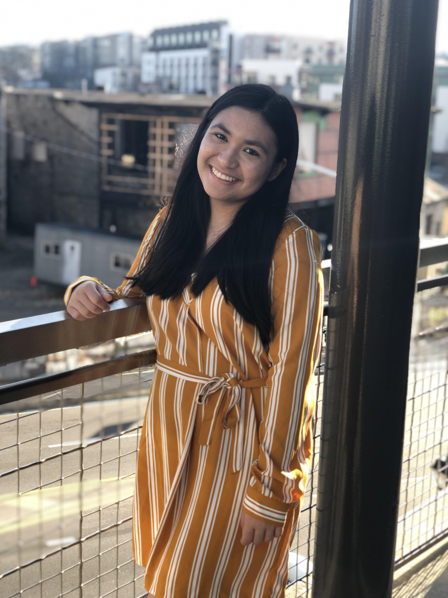
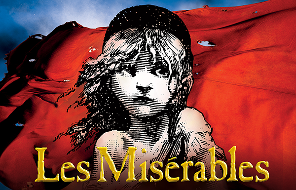
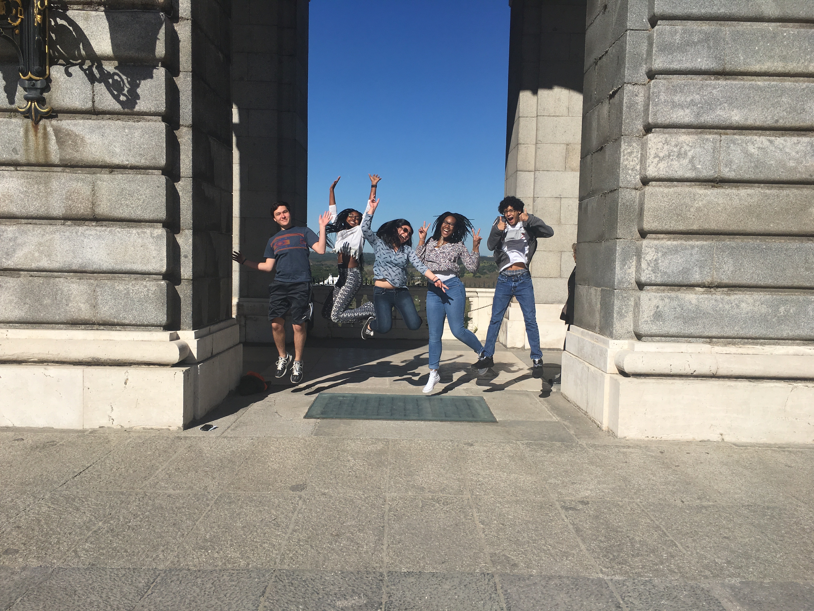
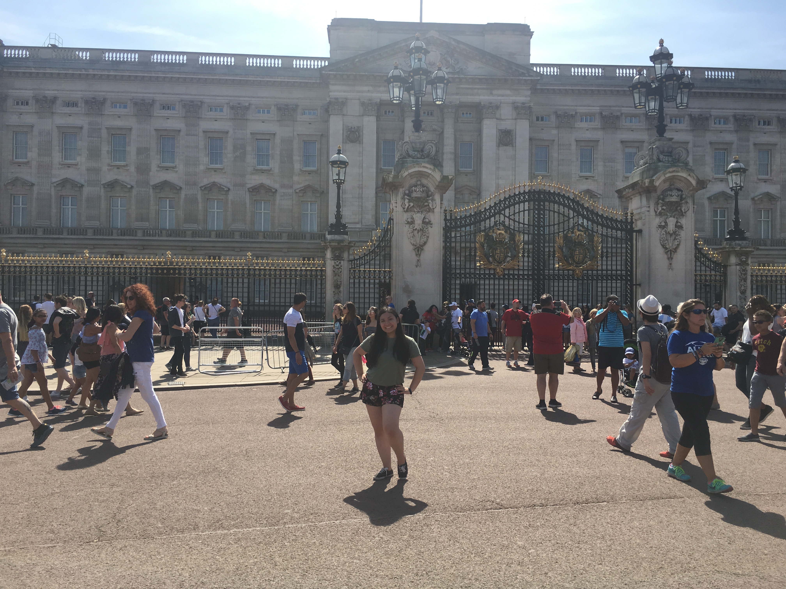
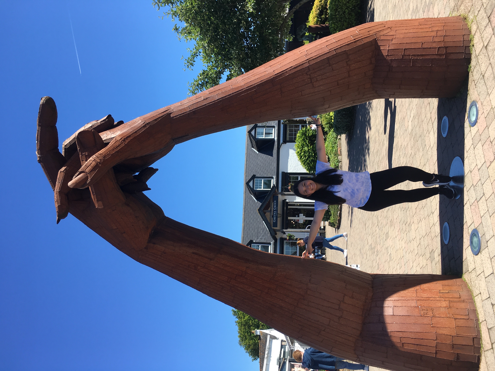
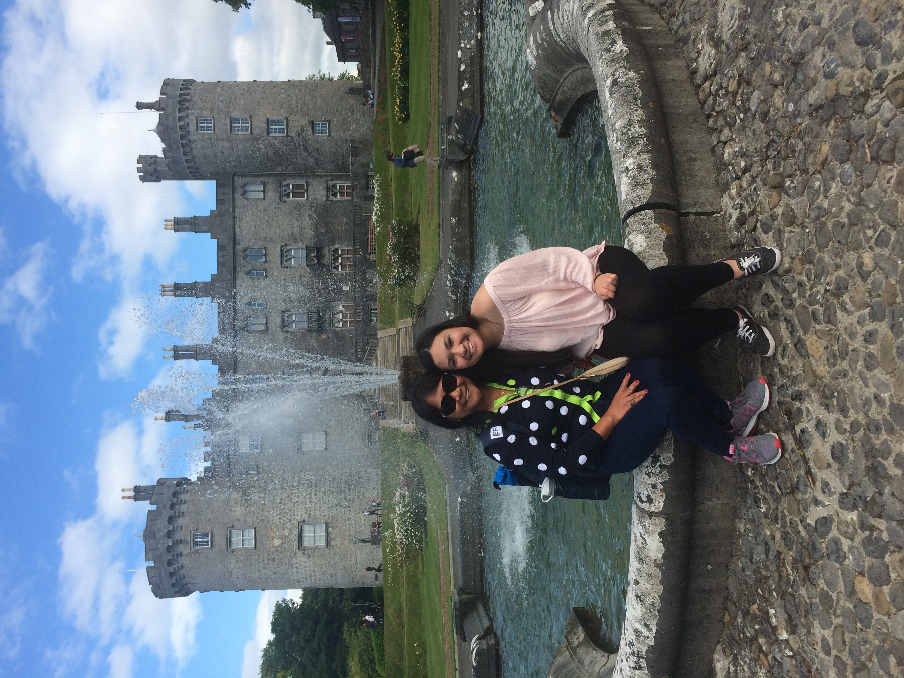
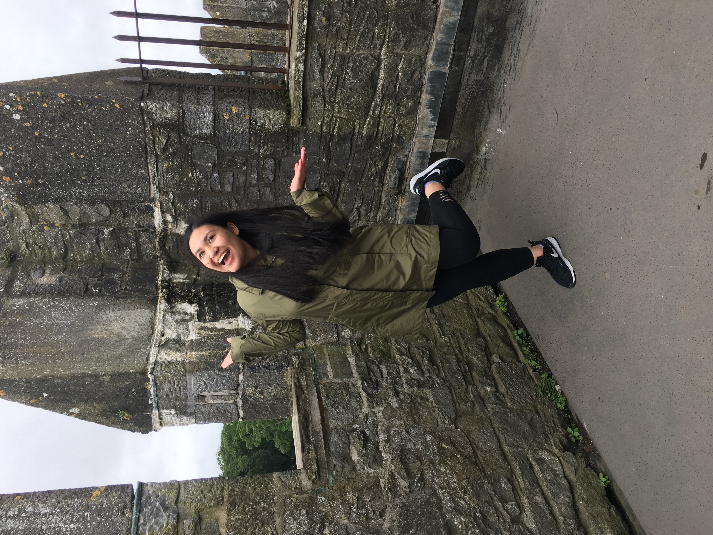
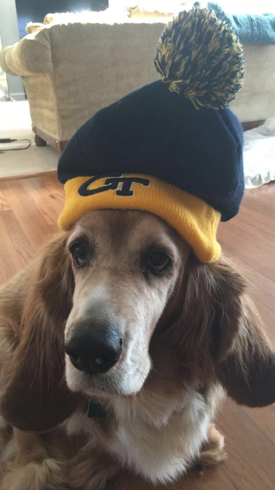
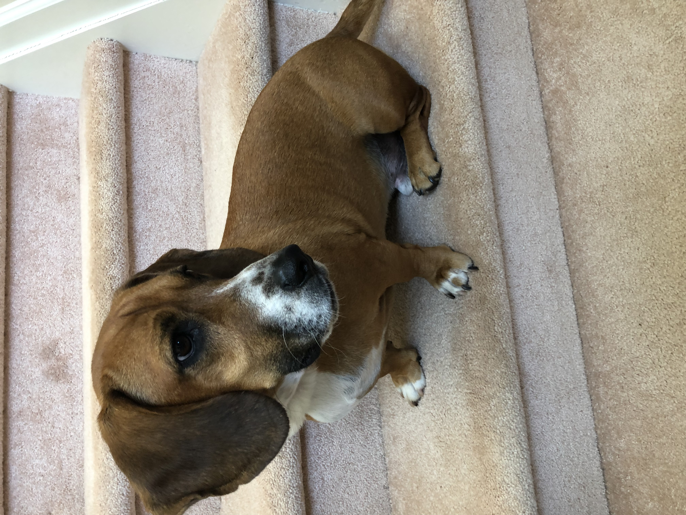

About Me
I am Isabelle Dittamo!
I am an intern at Google as a part of the STEP Internship for the Summer of 2020!

I'm also a rising 3rd year student at the Georgia Institute of Technology studying Computer Science with concentrations in Information Internetworks and Intelligence.
At school, I am a Teaching Assistant in the College of Computing! I have previously TA'ed for the Introduction to Computing course.

Outside of school, I'm a huge fan of musicals! Some of my favorites include Wicked, Les Misérables, and Mamma Mia.
I also love traveling around the world! Here's some snapshots of some of my previous travels around Europe.
    Most of all though, I love my two dogs Gumbo and Rocky!
 